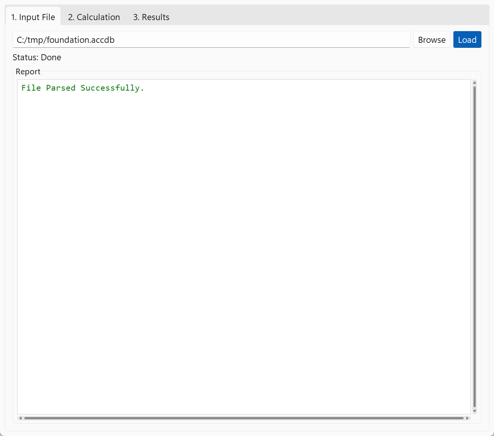
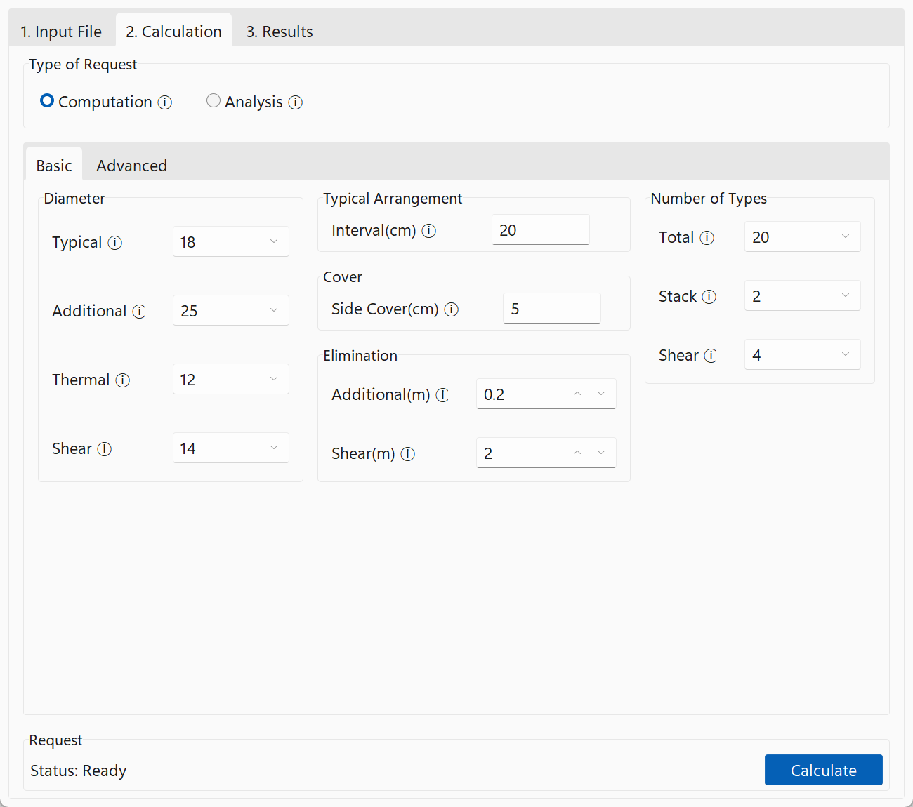
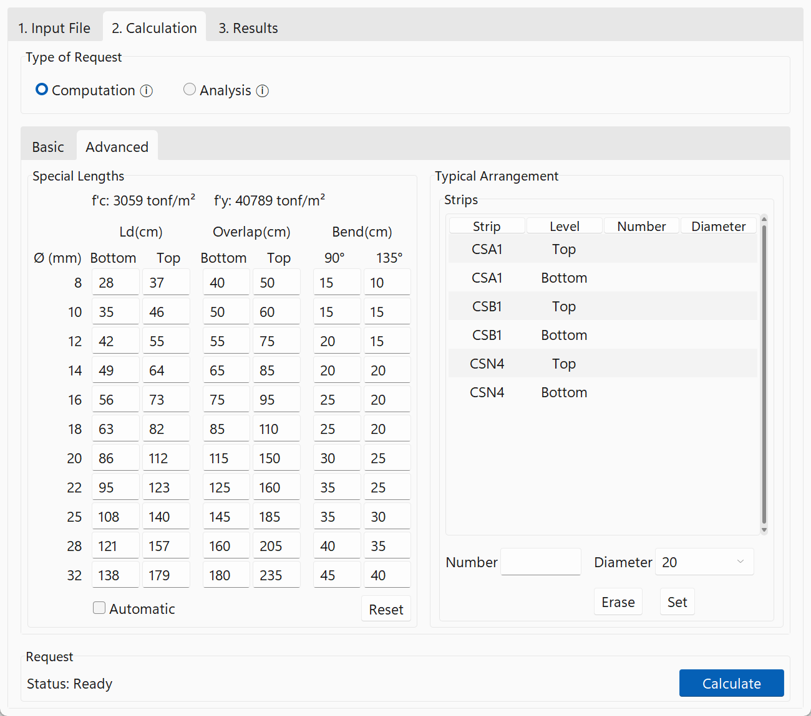
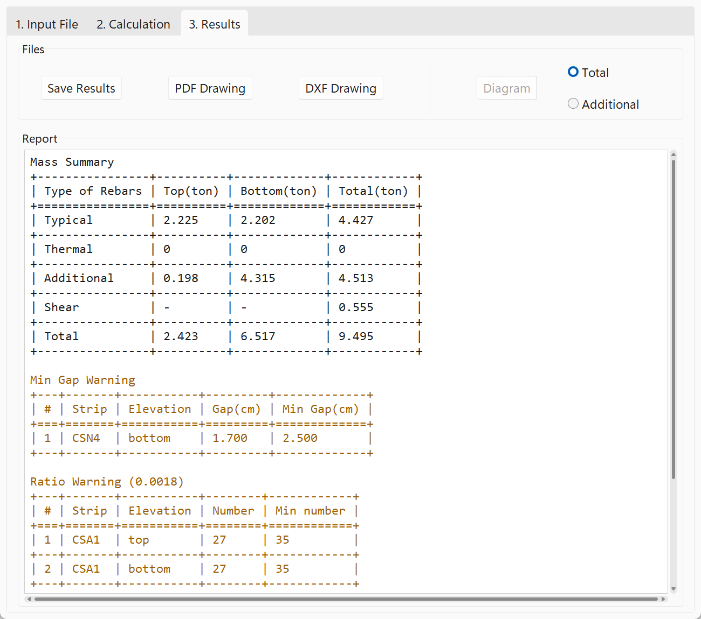

Quick Start#
This page walks through one project, from the SAFE model to the detailing map.
1. Export the model from SAFE#
Run the design in SAFE, then export the model to a Microsoft Access database (.accdb or .mdb).
Select both table groups in the export dialog:
Model Definition: grids, strips, slab properties, areas, columns and materials.
Design Results: the flexural and shear design of the strips.
OPTiBAR reports which group is missing if the file doesn’t have the tables it needs.
2. Load the file#
In 1. Input File, press Browse, choose the exported file and press Load. The Report box confirms the file was parsed, and warns when the model uses more than one concrete or steel material.

3. Set up the calculation#
In 2. Calculation, choose the Type of Request:
Computation details the foundation once, with the settings below.
Analysis repeats the detailing for a range of length types and compares the rebar mass of each, see Analysis.

The Basic tab holds the main settings. Hover the ⓘ next to a setting for a short description. View > Dark Theme switches the app to a dark theme.
Setting |
Meaning |
|---|---|
Diameter |
Bar diameter in mm of the typical, additional (reinforcing), thermal and shear rebars. |
Typical Arrangement, Interval |
Spacing of the typical rebars in cm. |
Cover, Side Cover |
Minimum distance of the longitudinal rebars to the side of the foundation, in cm. |
Elimination, Additional |
Additional rebars with a theoretical length shorter than this, in m, are left out. |
Elimination, Shear |
Parts of a strip needing shear rebars that are shorter than this, in m, get none. |
Number of Types, Total |
The maximum number of different additional rebar lengths in the whole foundation. |
Number of Types, Stack |
The maximum number of different additional rebar lengths in one stack of bars. |
Number of Types, Shear |
The maximum number of different shear rebar arrangements in the foundation. |
Fewer length types make the drawing simpler to cut, place and check, at the cost of some extra steel.

The Advanced tab is optional:
Special Lengths are the development length (Ld), overlap length and bend lengths per diameter, in cm. They are calculated from the project’s concrete and steel when the file is loaded; Reset restores those values. With Automatic checked, the top Ld and the overlaps follow from the bottom Ld.
Typical Arrangement overrides the typical rebars of single strips: select a strip and level, enter a number of bars and a diameter, and press Set. Erase removes the override.
Press Calculate. The button turns into Stop while the calculation runs, which you can press to cancel it.
4. Results#
When the calculation finishes, 3. Results shows the rebar mass and any warnings, such as bars that are closer than the minimum gap or a strip below the minimum steel ratio.

Save Results writes the full result as a JSON file and a readable summary next to it, see Outputs.
DXF Drawing saves the detailing map.
PDF Drawing saves a compact sketch with the strips and the tables.
Analysis#
An analysis repeats the computation for every combination in a range of total and stack length types, for example total 10 to 20 and stack 2 to 4. The status line shows the progress while it runs.
In 3. Results, the report lists the rebar mass of every combination. Diagram plots the mass against the number of length types, with one curve per stack number, either for all rebars (Total) or for the additional rebars only (Additional). Use it to choose the numbers of length types for the final computation.
Using OPTiBAR from Python#
The engine can be used without the app. Parse the SAFE file, run the calculation, and write the drawings:
from optibar.core.parser.parse import V16Parser
from optibar.core.run import run_calculation
from optibar.core.sketch.dxf import DxfDrawing
from optibar.core.sketch.sketch import Sketch
parser = V16Parser("foundation.accdb")
foundation = parser.get_foundation()
parser.close()
config = {
"diameter": {"typical": 18, "additional": 25, "thermal": 12, "shear": 14}, # mm
"typical_arrangement": {"method": "INTERVAL", "value": 0.2}, # m
"side_cover": 0.05, # m
"elimination": {"additional": 0.2, "shear": 2.0}, # m
"type_number": {"total": 20, "stack": 2, "shear": 4},
}
output = run_calculation(foundation, config)
if "errors" in output:
print("not feasible:", output["errors"])
else:
DxfDrawing(output["data"]).save("foundation.dxf")
Sketch(output["data"]).save("foundation.pdf")
For an analysis, give type_number["total"] and type_number["stack"] as ranges, {"from": 10, "to": 20}, and call core.run.run_analysis. It returns one result per combination, or {} where a combination isn’t feasible.
There is no command line interface yet.